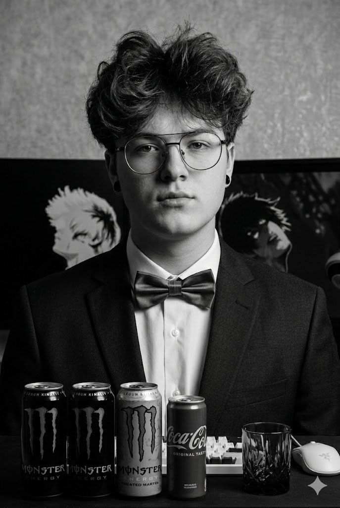

Основатель и Хранитель Лавки
"Я начал искать идеальный рецепт зелья бодрости еще в те времена, когда Дота была картой в Варкрафте. Эта кофейня — не просто место, где наливают кофе. Это настоящий Secret Shop для тех, кому нужно восстановить ману перед тяжелым днем, бафнуть интеллект перед экзаменом или просто зачиллить в таверне с друзьями".
Шеф-миксолог
Комбинирует сферы Quas (лед), Wex (воздушная пена) и Exort (горячий эспрессо) для создания идеального латте-арта.
Мастер обжарки
Использует заклинание Fiery Soul для мгновенной и идеальной обжарки кофейных зерен арабики до нужной кондиции.
Технолог сиропов
Его пассивная способность превращает обычные ингредиенты в чистое золото вкуса. Отвечает за секретные добавки.
г. Энск, ул. Пуш, дом 322
(Между Т2 и Т3 вышкой на миду)
Пн-Пт: 08:00 - 22:00
Сб-Вс: 10:00 - 00:00
Сломался артефакт или кофе остыл?
Пиши: polikman07@bk.ru